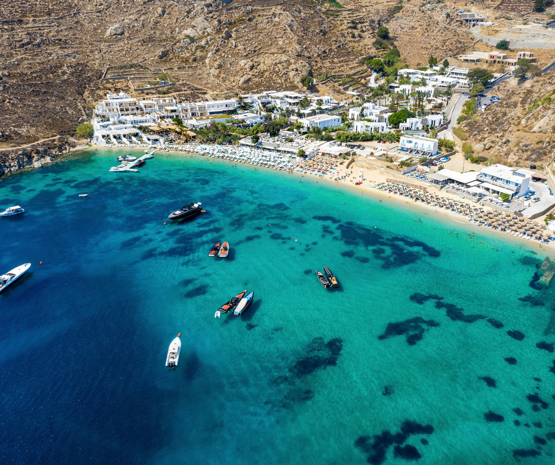
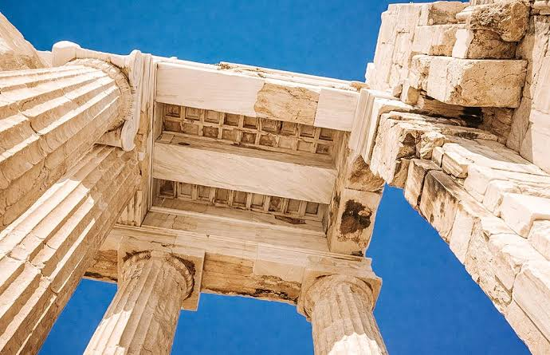
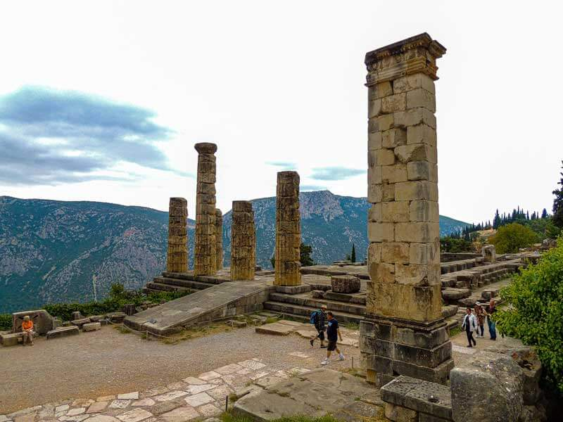
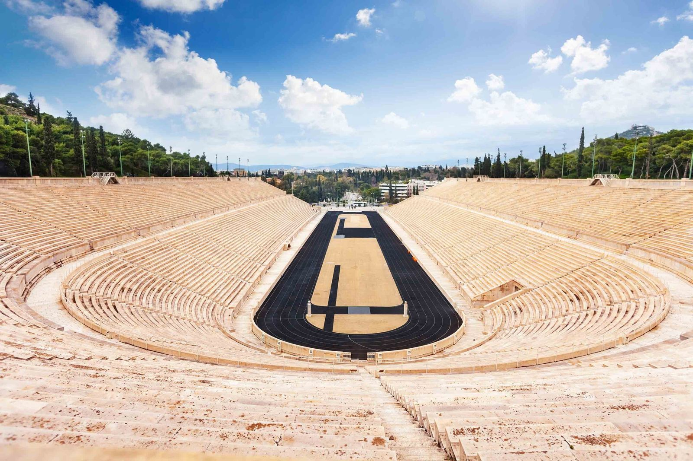

Ilha
Mykonos
Moinhos de vento, vielas brancas e vida noturna animada.
A Grécia reúne alguns dos sítios históricos mais importantes do mundo e paisagens que parecem cartão-postal. Veja abaixo o que ver em cada lugar, a melhor época e como aproveitar.

O templo dedicado à deusa Atena domina a cidade do alto da colina. Vá logo na abertura para fugir do calor e das filas, e aproveite a vista de Atenas ao entardecer.
Casas brancas, cúpulas azuis e um dos pores do sol mais famosos do planeta, sobre as ruínas de um antigo vulcão.

Mosteiros erguidos no topo de gigantescas colunas de rocha, como se flutuassem no ar. Um cenário difícil de acreditar até ser visto de perto.

Para os antigos gregos, era o centro do mundo. Ali ficava o famoso oráculo, consultado por reis e generais antes das grandes decisões.

Capital da civilização minoica, ligada à lenda do Minotauro e do labirinto. Depois, as praias de Elafonisi e Balos completam o roteiro.

Muralhas, ruas de pedra e o Palácio do Grão-Mestre formam um dos centros medievais mais bem preservados da Europa.

Moinhos de vento, vielas brancas e vida noturna animada.

A segunda maior cidade do país, com orla agradável e muita história bizantina.

Berço dos Jogos Olímpicos, com estádio e templos antigos.